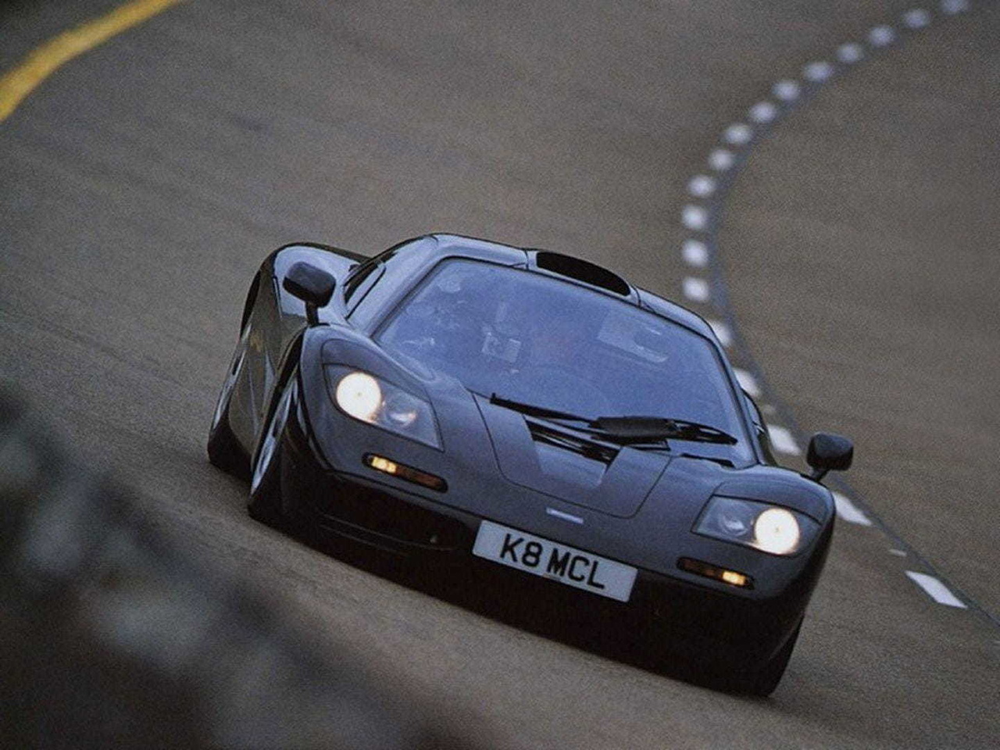
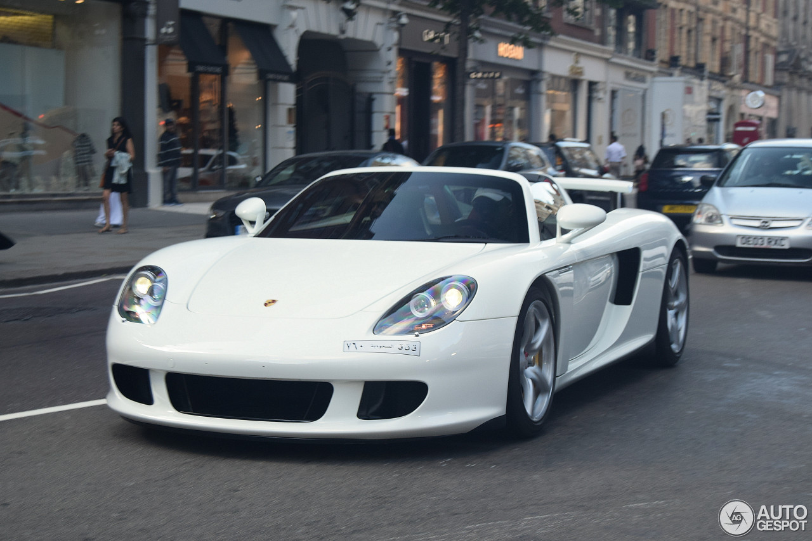
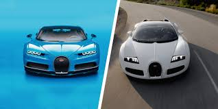
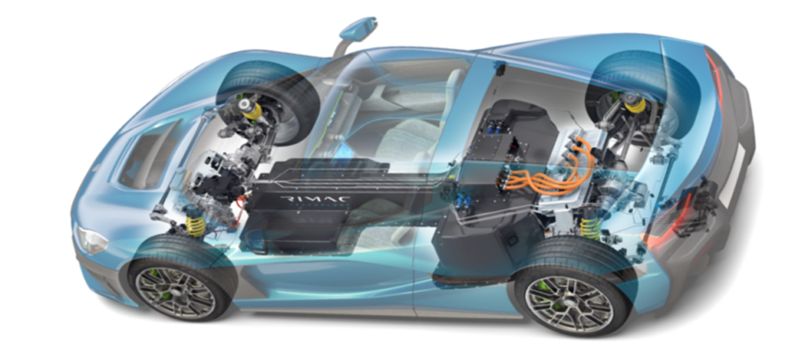

El Fascinante Mundo de los Supercarros
Explorando las máquinas más avanzadas y rápidas del planeta
¿Qué es un Supercarro?
Un supercarro es un automóvil deportivo de alto rendimiento que se caracteriza por su diseño aerodinámico, materiales ligeros y motores extremadamente potentes. Estos vehículos representan la cúspide de la ingeniería automotriz y suelen producirse en cantidades limitadas.
Los supercarros no solo destacan por su velocidad, sino también por su tecnología avanzada, exclusividad y precios elevados. Son el sueño de muchos entusiastas del automovilismo y símbolos de prestigio y poder.
Características Principales
Elementos que definen un supercarro:
- Materiales ligeros como fibra de carbono y aluminio
- Aerodinámica optimizada para alta velocidad
- Sistemas de frenado de alto rendimiento
- Suspensión deportiva ajustable
- Producción limitada y exclusiva
- Diseño agresivo y distintivo
Marcas Más Reconocidas:
- Bugatti
- Lamborghini
- Ferrari
- Porsche
- McLaren
- Aston Martin
Modelos Destacados
McLaren F1
Considerado por muchos como el primer "hipercoche" moderno. Famoso por su configuración de tres asientos (el conductor en el centro) y ser el coche de producción más rápido durante muchos años.

Porsche Carrera GT
Un superdeportivo con un motor V10 aspirado con un sonido inolvidable, considerado uno de los mejores esfuerzos de Porsche. El Carrera GT no fue solo un coche rápido; fue un vehículo que marcó el final de una era.

Bugatti Veyron
El coche que redefinió la velocidad en el siglo XXI, siendo el primero en superar los 400 km/h en un coche de producción. El Veyron emplea una potencia masiva generada por cuatro turbos y la gestiona a través de una compleja electrónica.
Tecnologías Avanzadas
Evolución de los Supercarros
1960s
Nacimiento del concepto con modelos como el Lamborghini Miura

1970s-1980s
Época de los supercarros clásicos como el Ferrari F40

1990s
Avances en aerodinámica y electrónica con el McLaren F1
2000s
Enfoque en la usabilidad diaria con el Porsche Carrera GT
2010s
Era de los hipercarros con el Bugatti Veyron y Chiron
2020s
Transición hacia la electrificación con el Rimac Nevera
